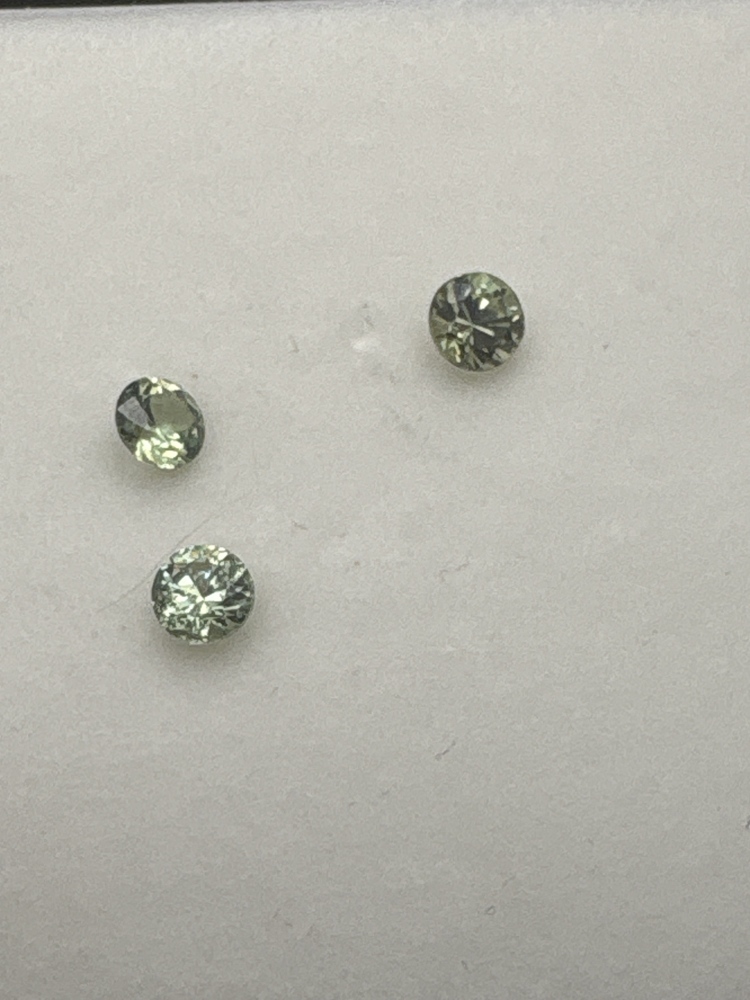

The Gem Drawer › No. 102

Three pale yellow-green rounds with strong fire, labeled to a known cutter.
| Catalogue no. | #102 |
|---|---|
| As labeled | Demantoid Garnet - SET OF THREE stones in this box, label cites "Chris Johnston" (possible cutter/provenance attribution, unverified) - see notes |
| Shape / cut | Round (all three) |
| Weight | 0.20 (label is singular; likely combined/approximate for the set of 3, see notes) |
| Measurements | Not recorded |
| Colour | Pale yellowish-green, strong brilliance/fire |
| Clarity / condition | Not recorded |